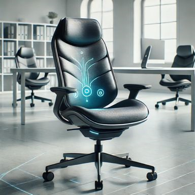
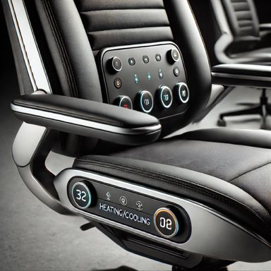

A SmartChair é a cadeira ideal para escritórios modernos e inovadores. Nosso objetivo é melhorar a saúde, o conforto e a produtividade, integrando tecnologia avançada ao dia a dia do utilizador. Este projeto foi concebido para resolver os problemas mais comuns enfrentados em ambientes de trabalho, como má postura, desconforto térmico e falta de pausas adequadas.
Funcionalidades Principais
Monitorização de postura em tempo real, com alertas automáticos;
Ajuste térmico personalizado para o assento;
Cálculo da temperatura média ideal em escritórios open space;
Integração total com uma aplicação móvel intuitiva.

Como Funciona
A SmartChair combina sensores de última geração, algoritmos inteligentes e conectividade para criar uma experiência personalizada:
Sensores de postura: Detectam a posição corporal e fornecem feedback em tempo real.
Ajuste térmico: Compensa a diferença entre a temperatura ambiente e a preferência do utilizador.
Aplicação móvel: Permite configurar preferências, visualizar relatórios e receber alertas.

Benefícios
Com a SmartChair, você aproveita:
Maior conforto e saúde postural;
Produtividade otimizada com intervalos regulares;
Melhor controle térmico em ambientes compartilhados;